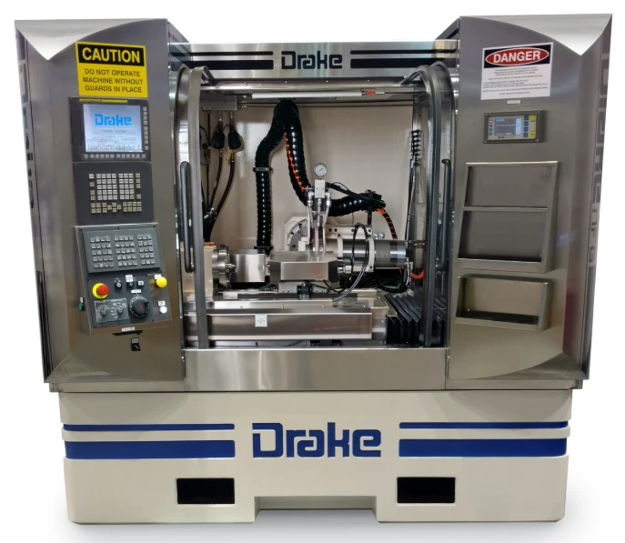
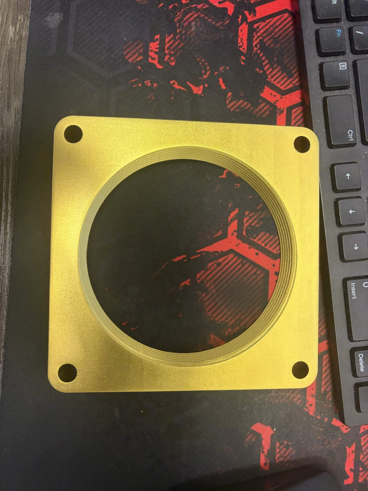
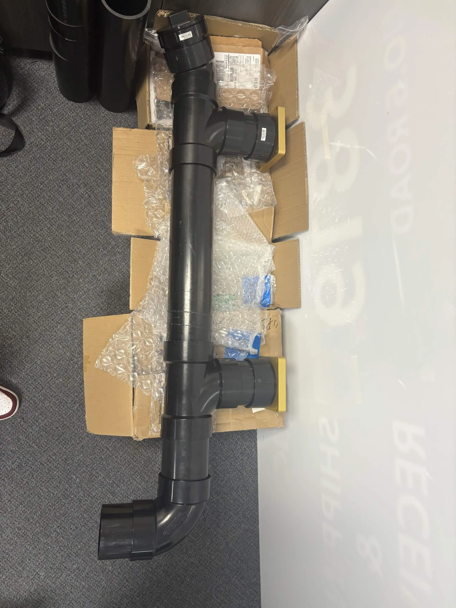
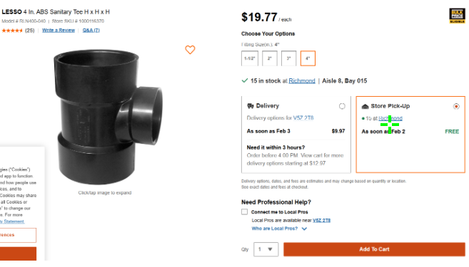

Dometic · Co-Op · Spring 2026
Drake CNC Piping Repair
Dometic's Drake CNC lathes were leaking oil through their piping. I was sent to investigate, traced it to the piping itself, and rebuilt it machine by machine — including a mounting flange I had to reverse-engineer and get fabricated overseas.

Overview
Dometic's Drake CNC lathes were leaking oil, and I was brought in to figure out why. After inspecting the machines, I concluded the problem was the piping itself — a combination of material and fit issues in the original runs — rather than anything wrong with the machines. The fix meant replacing that piping on each affected Drake, which turned out to be more involved than swapping like for like: no two machines were piped the same way, so each run had to be measured by hand and rebuilt in ABS to fit its own machine, including a custom mounting flange I reverse-engineered from the original hardware and had fabricated internationally through Honpe. I had a finished set of piping ready before the end of my term, but ran out of time to get it installed and tested. The co-op who took over after me — a friend of mine — has it in hand, so there's a good chance it gets installed and validated on his term.
Design & Build
Tracing the Leak, Rebuilding the Piping
A smaller project than the others, but one with its own share of reverse-engineering and hands-on fitting.
Tracing the Leak
I was sent to inspect the Drake machines after oil started showing up where it shouldn't. Rather than assume a seal or fitting had failed, I traced the leak back to the piping runs themselves — the material and fit of the existing pipe were both working against a clean seal. That conclusion set the scope of the fix: not a patch job, but a full replacement of the piping on each affected machine.

Reverse-Engineering the Flange
There was no drawing for the mounting flange that connects the new piping to the machine, so I built one from measurements — taken off the machine itself and cross-referenced against the old piping to work out the correct thread. With no local shop set up to cut that thread accurately, I had the flange fabricated internationally through Honpe rather than compromise on fit.

Machine-Specific ABS Piping
Every Drake machine had its own piping configuration, so there was no single part that would fit all of them. Each run — like this one — was measured mostly by hand, then cut and assembled from ABS pipe, tees, and elbows to match that specific machine's layout. It's a tangible fix, ready to go in, but I ran out of term before I could get it installed and pressure-tested.

Parts That Weren't Quite Identical
Even fittings sold as the same 4 in ABS spec weren't guaranteed to match — interior diameters lined up, but exterior diameters on tees and elbows could vary just enough between sources to throw off a fit. That meant more trips to pick up parts and check them by hand than a single online order would suggest, verifying fit before committing a piece to the final assembly.